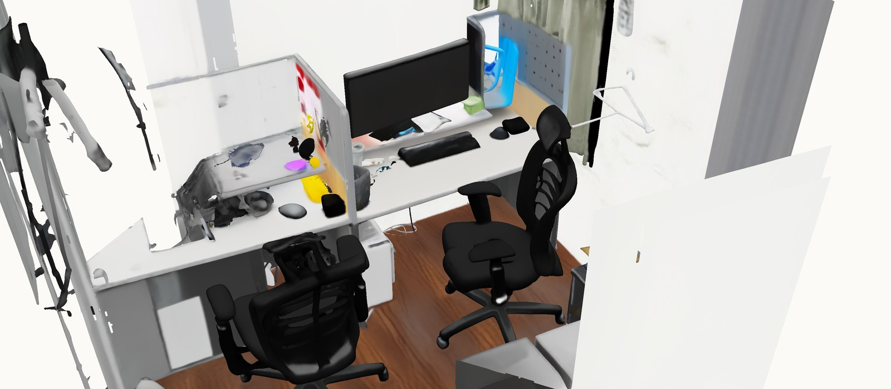
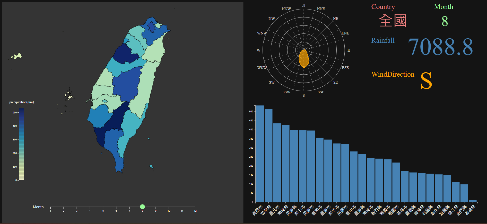

這裡是我的個人部落格，記錄寫程式、資料視覺化，還有一些學習和生活上的想法。

把實驗室桌角的手機影片丟進 GenRecon，重建出可以在網頁上旋轉檢視的 3D 場景，並記錄從影片到重建的做法。

資料視覺化課程期末專題：用 2023 年氣象站資料，探索風向對台灣各地降雨的影響。
我是 Brian Wu，對資料視覺化、前端和各種好玩的程式小專案有興趣。這個網站用純 HTML/CSS 寫成，放在 GitHub Pages 上。